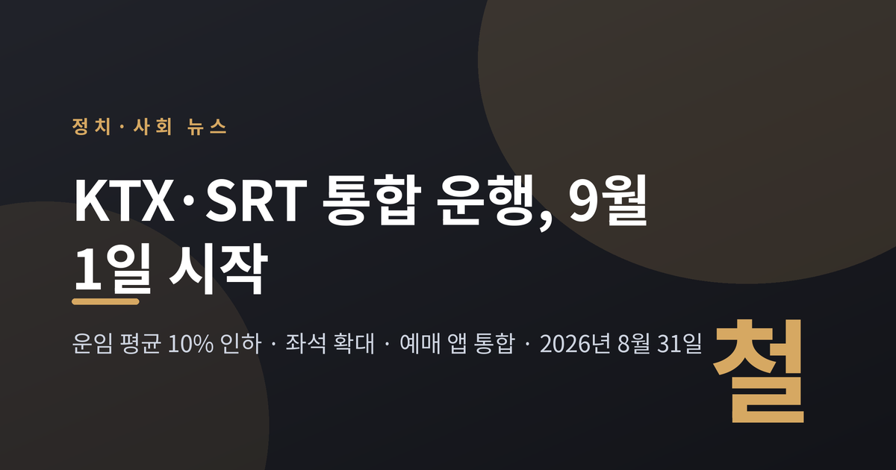
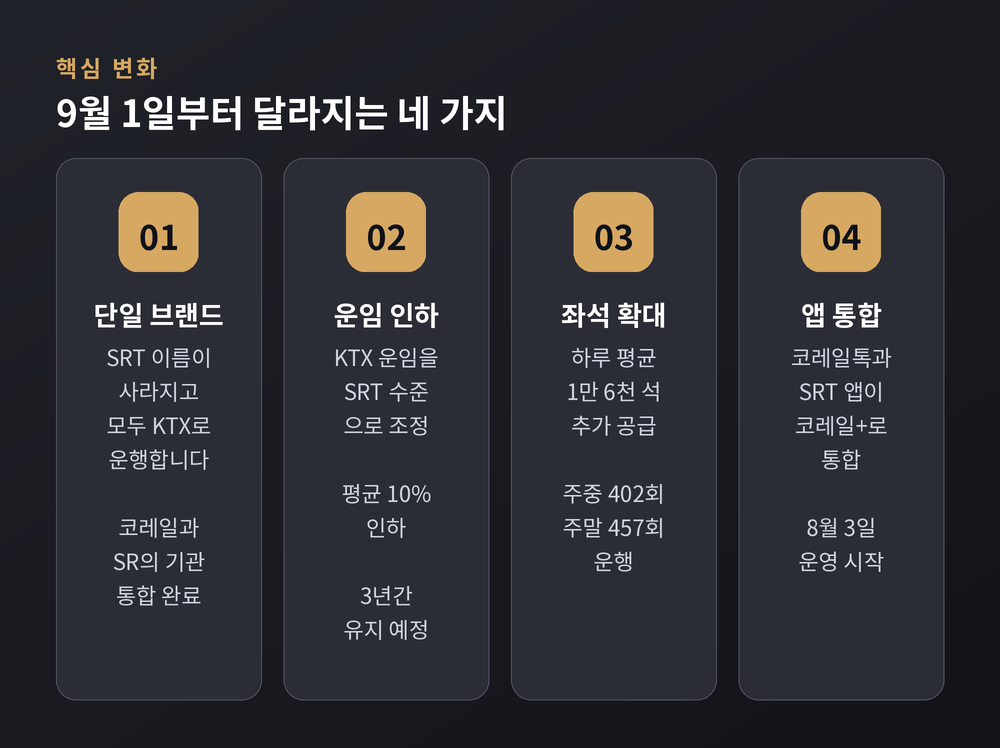
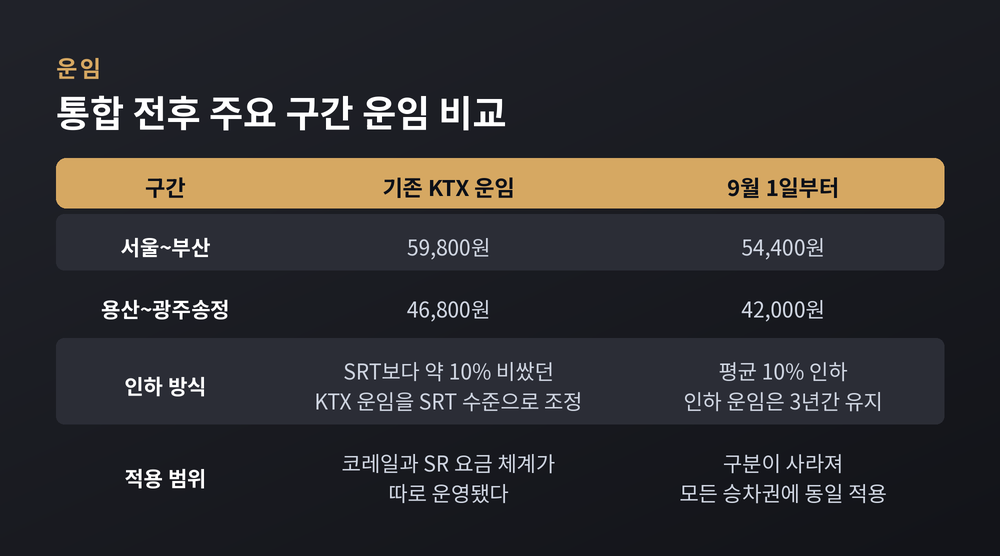
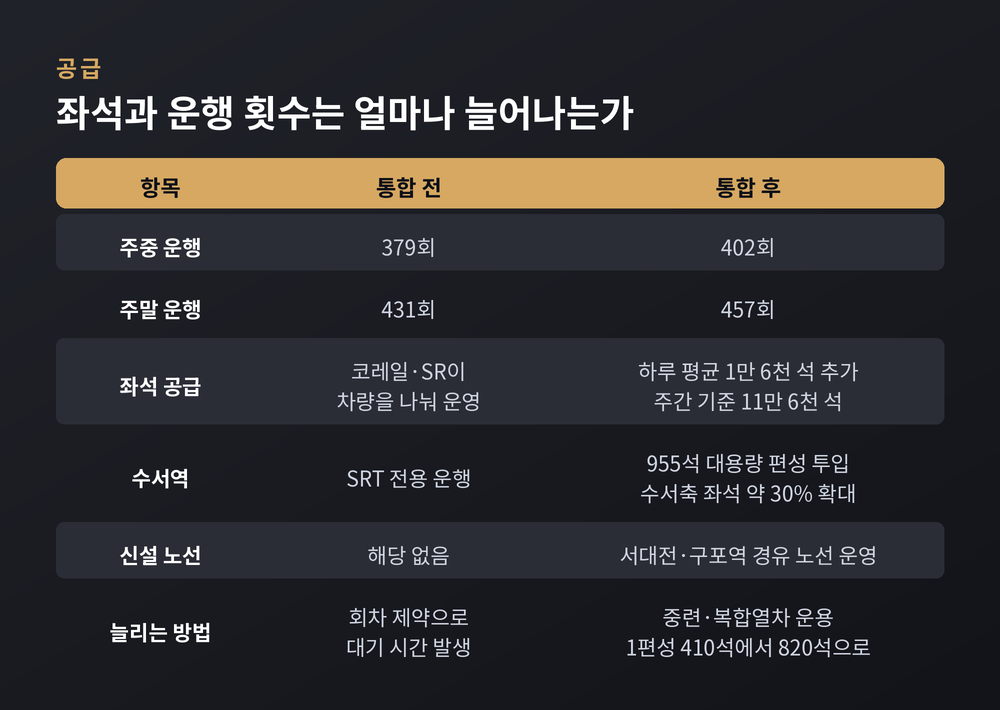
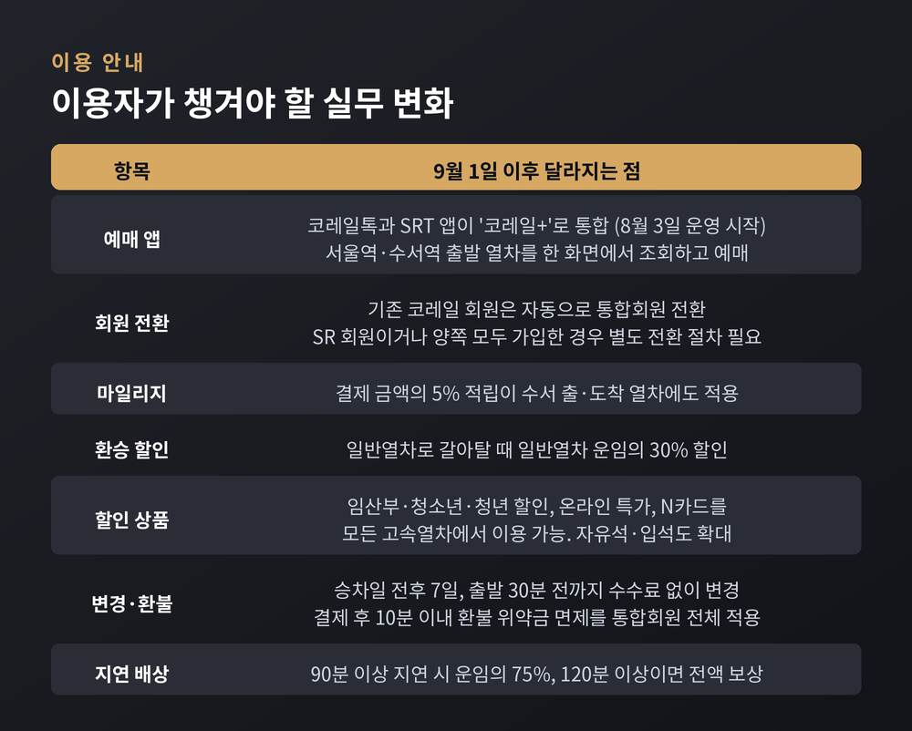
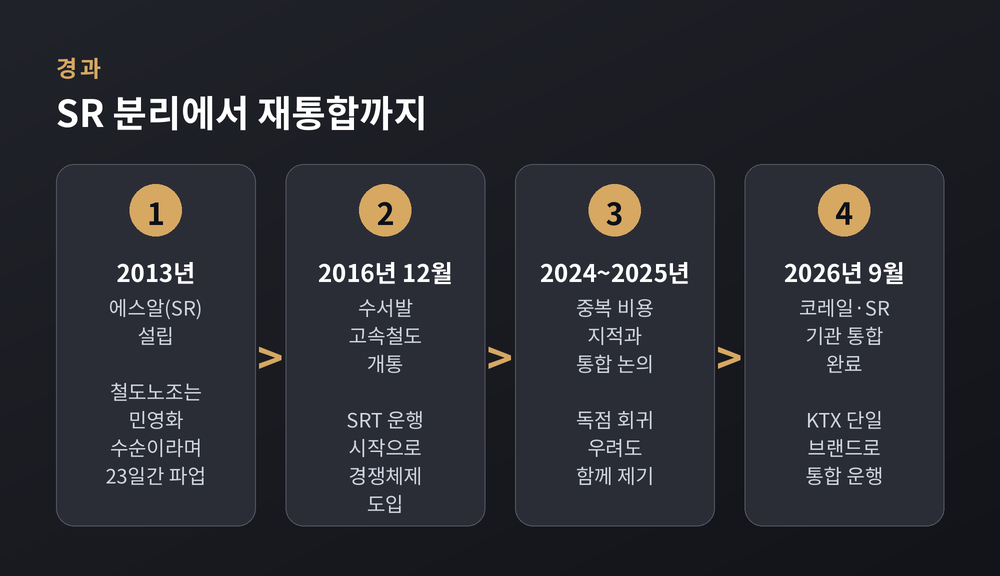
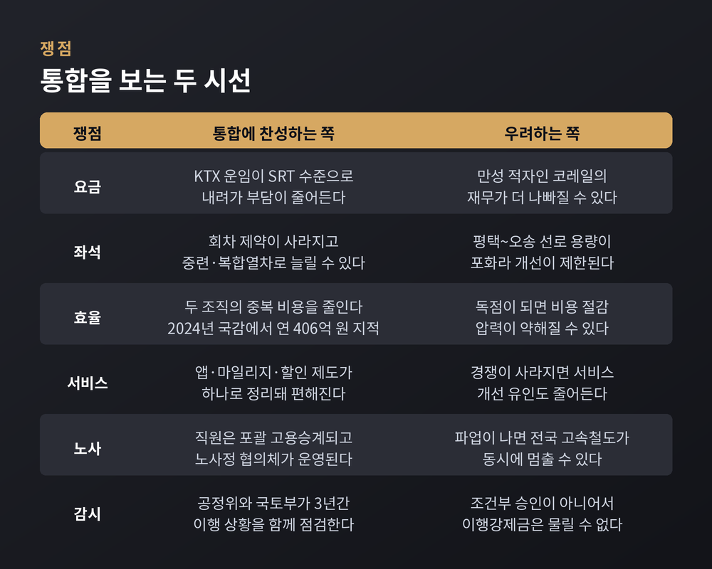

9월 1일부터 SRT라는 이름이 사라집니다. 수서역에서 출발하는 열차도 앞으로는 KTX입니다. 이번 글에서는 무엇이 어떻게 바뀌는지, 그리고 이 결정을 둘러싼 찬반의 논리가 각각 무엇인지를 정리해 보겠습니다.
먼저 세 줄로 요약하겠습니다. 첫째, 운임이 평균 10% 내려갑니다. 서울~부산은 5만 9,800원에서 5만 4,400원이 됩니다. 둘째, 좌석이 늘어납니다. 하루 평균 1만 6,000석 규모입니다. 셋째, 예매 앱은 '코레일+' 하나로 합쳐집니다.

국토교통부는 8월 31일 코레일과 SR의 기관 통합을 완료했다고 밝혔습니다. 그리고 9월 1일부터 KTX와 SRT를 'KTX'라는 하나의 이름으로 운행합니다.
절차는 이미 다 끝났습니다. 국토부는 재정경제부, 공정거래위원회 등과 인력 정원을 협의하고 기업결합 심사를 거쳤습니다. 사업 양수도 인가, 철도사업계획 변경, 철도안전관리체계 변경 같은 법정·행정 절차도 마무리했습니다.
가장 먼저 체감되는 변화는 요금입니다. 기존 KTX 운임을 SRT 수준으로 끌어내리는 방식입니다. SRT 요금이 오르는 것이 아니라, 더 비쌌던 KTX 요금이 내려옵니다.
서울~부산 기준운임은 5만 9,800원에서 5만 4,400원으로 5,400원 낮아집니다. 용산~광주송정은 4만 6,800원에서 4만 2,000원으로 4,800원 내려갑니다. 이 인하된 운임은 통합 이후 3년간 유지되며, 그 뒤 적정 요금은 다시 검토하기로 했습니다.

코레일은 분리 운영하던 고속철도 차량을 통합 운용해 하루 평균 1만 6,000석, 주간 기준 11만 6,000석을 추가 공급한다고 밝혔습니다. 운행 횟수는 주중 379회에서 402회로, 주말 431회에서 457회로 늘어납니다.
공정거래위원회와 국토부가 함께 내놓은 사업계획 기준으로는 주말 좌석이 1만 7,000석 이상, 운행 횟수가 25회 이상 늘어납니다. 국토부 설명에 따르면 현재 공급 규모 대비 약 6% 확대에 해당합니다. 수서역에서 출발하는 이른바 수서축 좌석은 약 30% 늘어난다는 보도도 나왔습니다.
방식은 두 가지입니다. 하나는 중련열차입니다. 출발역부터 종착역까지 두 편성을 이어 붙여 운행합니다. 다른 하나는 복합열차입니다. 목적지가 다른 두 열차를 붙여 보내다가 동대구역 같은 지점에서 분리해 부산행과 포항행으로 나눕니다. KTX-산천 한 편성이 410석인데, 이렇게 묶으면 820석이 됩니다.
여기에 회차 제약이 사라집니다. 예전엔 코레일 열차는 서울·용산역으로, SR 열차는 수서역으로 되돌아가야 했습니다. 지금은 부산에서 올라온 열차가 서울이든 수서든 상황에 맞게 향할 수 있습니다. 대기 시간이 줄면 열차 운행률이 올라가고, 여유 편성이 생깁니다.
수서역에는 955석 규모의 대용량 편성이 투입됩니다. 서대전·구포역을 경유하는 노선도 새로 생깁니다.

승차권 예매 앱부터 달라졌습니다. '코레일톡'과 'SRT'가 '코레일+'로 합쳐졌고, 8월 3일부터 운영을 시작했습니다. 서울역과 수서역 출발 열차를 한 화면에서 조회하고 예매할 수 있습니다.
회원 전환은 사람마다 다릅니다. 기존 코레일 회원은 자동으로 통합회원이 됩니다. 반면 SR 회원이거나 양쪽 모두에 가입한 분은 별도의 전환 절차를 밟아야 합니다. 여기서 한 번 걸리는 분들이 나올 수 있습니다.
혜택은 대체로 넓어지는 쪽입니다.
자유석과 입석 운영도 확대되고, 정기승차권을 비롯한 기타 서비스도 편익을 높이는 방향으로 통합 운영될 예정입니다. 코레일은 AI 기반 매크로 탐지 시스템으로 부당한 승차권 선점도 막겠다고 밝혔습니다.

이 결정이 왜 논쟁적인지 알려면 출발점을 봐야 합니다.
SR은 2013년에 설립됐고 2016년부터 영업을 시작했습니다. 2016년 12월 수서발 고속철도가 개통하면서 SRT가 달리기 시작했고, 그때 철도 운영에 경쟁체제가 도입됐습니다. 명분은 분명했습니다. 경쟁을 통해 효율을 높이고 서비스를 개선하겠다는 것이었습니다.
당시에도 반발은 있었습니다. 철도노조는 수서발 KTX를 떼어내는 것이 민영화로 가는 길목이라고 규정하며 23일간 파업했습니다. 다만 SR은 민간기업이 아니라 정부가 지배하는 준시장형 공기업으로 2019년 지정됐습니다. '민영화'라는 표현은 노동계와 일부 시민사회가 붙인 정치적 규정에 가깝습니다.
그 뒤 10년 가까이, 경쟁체제는 실제로 무엇을 남겼을까요. 평가는 갈립니다.
한쪽에서는 SRT가 KTX보다 약 10% 싼 운임을 들고 나오면서 가격 견제가 작동했고, 코레일도 마일리지와 할인 상품으로 맞대응하며 서비스 경쟁이 이어졌다고 봅니다. 다른 쪽에서는 두 회사가 각각 유지하는 중복 비용을 문제 삼습니다. 2024년 국정감사에서는 경쟁체제로 연 406억 원이 낭비된다는 지적이 나오기도 했습니다.

공정위는 7월 31일 이 기업결합을 승인했습니다. 원래는 간이심사 대상이었습니다. 코레일과 SR 모두 정부가 단독으로 지배하는 공기업이어서, 공정거래법상 특수관계인 관계이기 때문입니다. 그런데도 공정위는 고속철도가 국가 기간시설이라는 점을 들어 심층심사를 했습니다. 공기업 간 기업결합을 심층 심사한 첫 사례입니다.
경쟁 제한 우려가 낮다고 본 근거는 규제였습니다. 운임은 국토부 장관이 고시한 상한을 넘길 수 없고, 변경하려면 신고 수리를 받아야 합니다. 좌석 공급과 관련한 사업계획 변경이나 약관 변경도 인가나 신고 수리가 필요합니다. 요컨대 마음대로 올리거나 줄일 수 없는 구조라는 설명입니다.
찬성 측 논거는 이렇습니다. 요금이 실제로 내려가고 좌석이 늘어난다는 점, 중복 비용을 줄일 수 있다는 점, 앱과 마일리지와 할인 제도가 하나로 정리돼 이용자가 편해진다는 점입니다. 오건호 '내가만드는복지국가' 공동대표는 분리 운영이 민영화가 좌절된 뒤 시장화를 우회적으로 추진한 결과였다며 통합을 반겼습니다. 다만 그도 "통합이 다시 공기업 독점으로 회귀하는 결과가 되어서는 안 된다"는 단서를 달았습니다.
반대와 우려의 논거도 가볍지 않습니다.
첫째, 독점의 구조적 위험입니다. 단일 공기업이 운영하면 서비스 개선과 비용 절감에 대한 내부 압력이 약해질 수 있고, 과거 공기업 독점에서 반복된 조직 비대화가 재현될 가능성을 배제하기 어렵다는 지적입니다.
둘째, 파업 리스크의 단일화입니다. 지금까지는 두 회사의 노조 구조가 달라 파업이 나도 피해가 분산됐습니다. 하나가 되면 전국 고속철도가 동시에 멈출 수 있습니다.
셋째, 수치의 신뢰성입니다. SR 노동조합은 좌석 증가와 비용 절감 수치의 전면 재검증을 요구했습니다. 코레일과 SR 사이의 제도적 불균형이 진짜 문제인데 통합으로 경쟁 기반 혁신이 훼손된다는 입장입니다.
넷째, 절차 문제입니다. 국회 국토교통위원회에서는 충분한 연구용역 없이 정책 판단만으로 통합을 추진하는 것이 위험하다는 지적이 나왔습니다.

이해관계가 얽힌 지점을 짚어두겠습니다.
먼저 선로입니다. 평택~오송 구간은 이미 선로 용량이 포화 상태라는 사실을 국토부가 브리핑에서 인정했습니다. 해법으로 제시한 2복선화는 2028년 말에야 완공됩니다. 그전까지는 열차 운용 효율화로 버텨야 합니다. SR이 발주한 신규 14편성 효과도 이번 1만 7,000석 수치에는 들어가 있지 않습니다. 신규 31편성은 2028년까지 순차 도입됩니다.
다음은 재무입니다. 코레일의 부채비율은 2025년 280.2%로 최근 3년 오름세입니다. 2025년 연결 영업손실은 3,524억 원, 미처리결손금은 12조 7,126억 원입니다. 요금을 내리면 적자가 더 커지는 것 아니냐는 질문이 브리핑에서도 나왔습니다. 정부는 2028년 말 복선화와 신규 차량 도입에 따른 좌석 확대로 매출이 늘어 법정 부채비율 안에서 관리할 수 있다고 답했습니다. 코레일은 5년간 11조 7,137억 원 규모의 자구노력으로 2029년 부채비율 138.9%를 목표로 하고 있습니다.
마지막은 사람입니다. SR 직원은 기존 근로조건 유지를 전제로 포괄 고용승계됩니다. 고용·직무·보수·복지 같은 세부 사항은 노사 협의로 조정합니다. 코레일 조직 안에 SR 업무를 승계하는 '통합사업관리부문'을 두되, 최대 3년까지만 운영합니다. 1년 뒤 이행 정도와 조직 안정화 상황을 평가해 운영 기간을 정합니다. 열차와 앱은 하나가 됐지만 조직은 아직 완전히 섞이지 않은 상태입니다.
감시 장치도 짚어야 합니다. 공정위와 국토부는 8월 3일 업무협약을 맺고 3년간 운임·좌석·서비스 이행 상황을 함께 점검하기로 했습니다. 다만 이번 건은 조건부 승인이나 시정조치가 아니어서 이행강제금을 물릴 수는 없다고 공정위가 밝혔습니다. 점검은 하되 강제할 수단은 없는 셈입니다.
끝으로 한 마디만 더 드리겠습니다.
이번 통합에서 확실한 것은 두 가지입니다. 요금이 내려갔고, 하나였던 선택지가 정말 하나가 됐습니다.
찬성하는 쪽은 중복을 걷어낸 정상화라 하고, 반대하는 쪽은 견제가 사라진 독점이라 합니다. 전문가들이 공통으로 말하는 대목은 조금 다릅니다. 논쟁의 본질은 통합 여부가 아니라 독점의 부작용을 어떻게 통제할 것인가에 있다는 것입니다.
3년의 이행 점검, 2028년의 선로 확장, 그리고 그 뒤에 다시 열릴 요금 재검토. 답은 그 시간표 위에 놓여 있습니다.
당장 다음 주 표를 끊는 사람에게는 5,400원이 먼저 보일 것입니다. 그 5,400원이 3년 뒤에도 그 자리에 있을지는, 지금부터 지켜볼 몫입니다.